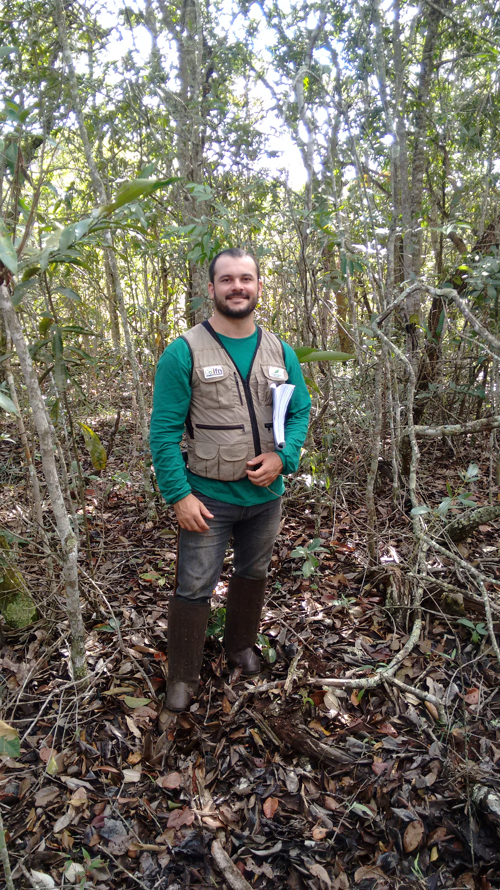

Olá. Eu sou Adriel Lucena, Engenheiro Florestal.
Criei esta página para apresentar meus serviços e compartilhar conhecimento na área ambiental. Ofereço suporte técnico em licenciamento e autorizações ambientais para empreendimentos de pessoas físicas ou jurídicas
Atuo em processos de Uso Alternativo do Solo, elaboração e acompanhamento de PRAD (projeto de Recuperação de Áreas Degradadas), Inventário Florestal, Cadastro Ambiental Rural, e Regularização Fundiária e Ambiental de imóveis rurais. Também posso ajudar com diagnósticos ambientais e com o desembargo de áreas autuadas por infrações ambientais.
Veja o que eu faço